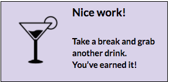

Part 1: Styling with CSS
Choose a color palette from colorhunt.co and make note of the color hex values (the #XXXXXX that displays when you hover over the color) to use as the colors in your project. You can also just use the one we selected: colorhunt.co/c/3986
Scroll through the list of fonts on google webfonts (google.com/fonts) and choose two fonts that you like and look nice together for your website or use the fonts we selected: Montserrat & Neuton. Fonts can be imported by inserting the following code in your CSS file:
@import url(https://fonts.googleapis.com/css?family=Montserrat|Neuton);Typically websites will include a serif font for the body and a sans-serif for the headers.
Click the blue “Add to Collection button” on the right of each one you want to use
At the bottom of the page click on the “Use” button.
Leave just the “Normal” box checked and scroll down to step 3 “Add this code to your website:”
Click on the import tab and copy that code and paste it in the top of your CSS file.
Fork the CSSCompilerPractice repository (bit.ly/CnCCmp) to your own account
Clone the repository to your computer using Git Bash or iTerm2
Open the index.html file in Google Chrome. It doesn’t look very nice, does it? Let’s add some styling!
Open the CSSCompilerPractice folder in Sublime Text. Add CSS to the styles.css file to style your page. Reference the CSS cheat sheet below for some of the commonly used CSS properties if you need a refresher or try googling things!
If you need some inspiration try to make your page look similar to the image here: bit.ly/CnCLDFS
- Style a horizontal navigation bar (If you need some help see w3schools: bit.ly/NavCSS )
- Style the main “hero” image with the large page heading, a smaller “tagline” and some about text
- Style a product list
- Style the sidebar Customer Favorites content to display on the right side
- Style a footer with copyright and social media links
- Once your page has been styled with CSS compare with the answer key here: bit.ly/CnCCSSKey. It may not be exact depending on how you’ve chosen to style your page and any creative liberties you’ve taken but will give you some idea on what your CSS might look like.
